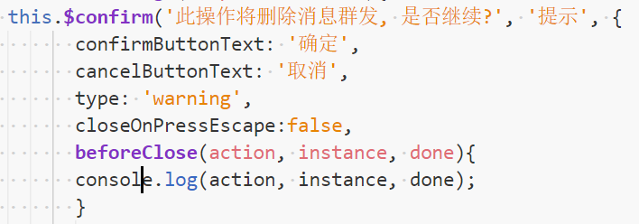
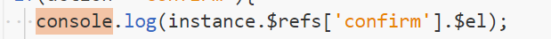

好久没见了
在项目中遇到一个小小的需求，总结了一下！
详细我就不介绍了，相信大家用过的话，很了解。详见文档----------->
http://element-cn.eleme.io/#/zh-CN/component/message-box#messagebox-dan-kuang
项目需求——关于ElementUI中MessageBox弹框的取消键盘触发事件(enter,esc)关闭弹窗的解决方法（也就是标题）
- 我们在接触或者是学习使用一个库，或者插件。通常我们最先看的就是文档。
- 如果遇到某个相关部分的知识，我们不要忘记原生方法。很多封装的库和方法都是基于这门语言的原生。万变不离其宗。
- 好了，不说了。直接贴代码。
我们会发现，弹窗关闭之前会有一个回调方法。这就是重点！
三个参数，详解见上面。
我们的需求是在弹窗之后，取消默认封装的点击enter,esc键盘事件的触发从而关闭弹窗，执行事件。

打印一下吧：
我们发现，确认按钮和enter按钮执行的action执行的都是confirm。done方法也一样，主要控制弹窗的关闭。
所以我们就需要在VueComonent实例里面做文章了。
刚刚说beforeClose中第二个参数指向的所在vue实例。所以我们可以打印一下里面的对象和属性。
我们找到所在vue实例里面的绑定元素。也就是触发的那个事件的元素。也就是事件元素。

打印如下：
用原生js添加点击事件，通过鼠标点击事件和键盘enter事件来触发它，然后打印数据。记得e做兼容
我们发现在不同的点击效果之后，把数据做对比。这里不做详细输出对象和属性的介绍。
我们会发现，键盘事件和鼠标事件e中区别。有很多参数值是不一样的。
当然还会有其他参数的不同都可以作为判断对象。这里只做列举。
操作过的同学会发现，如下-------
细心的同学就会发现，鼠标事件的detail属性值会变化，而enter事件点击一直是0。
那么：我们就可以利用这一点解决我们的需求。
好了，完整代码贴上。
可能我这个方法比较麻烦，不过你可以试试别的方法，比如全局监听键盘事件，和鼠标事件一起做对比。
做到正确的解决需求。
end